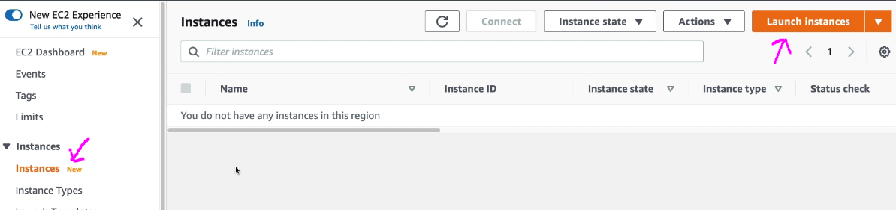
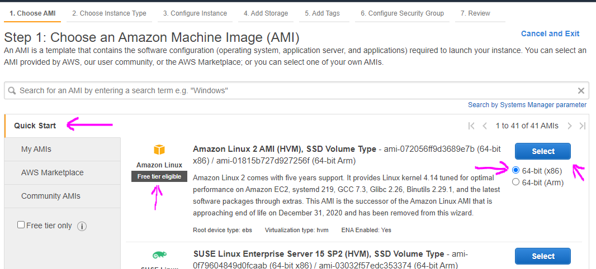
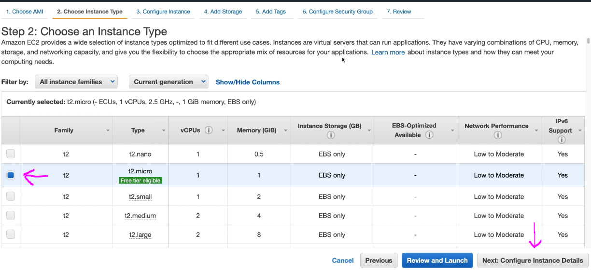
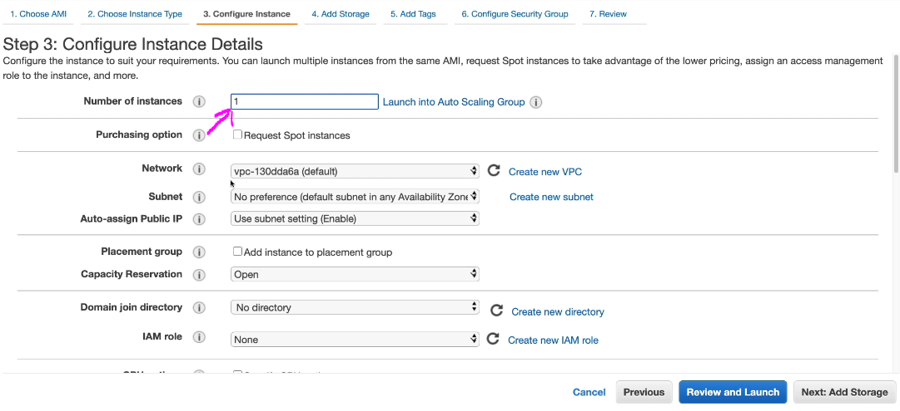
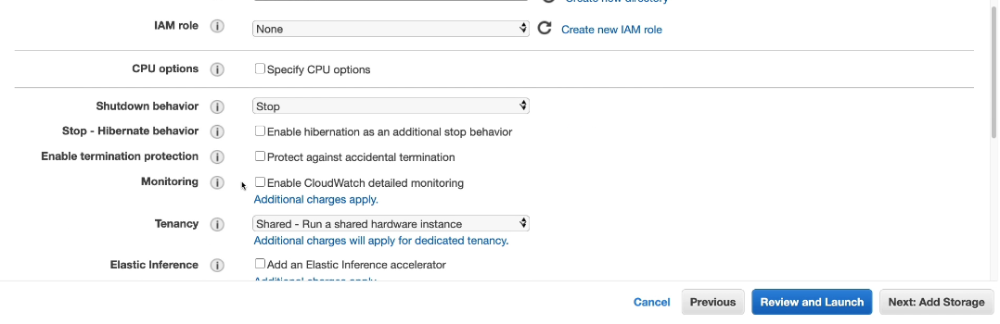
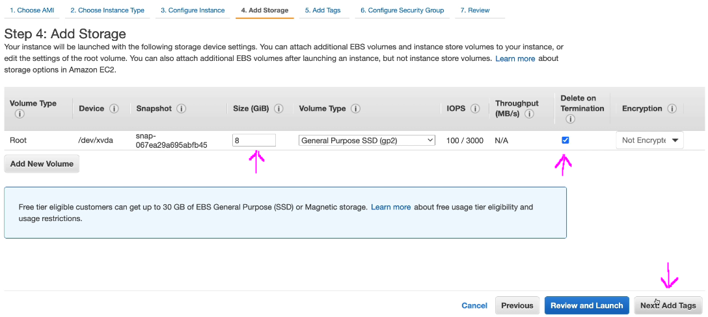
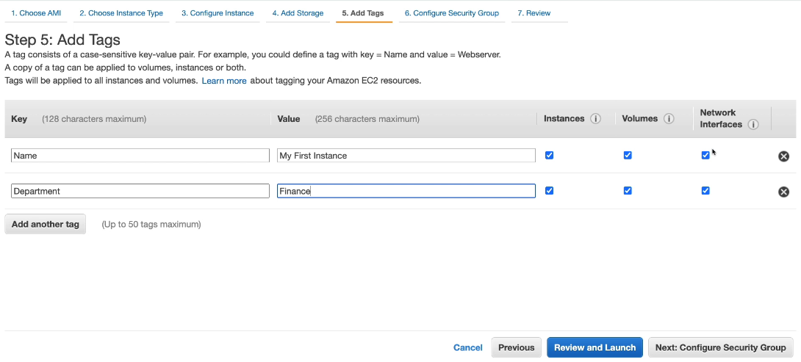
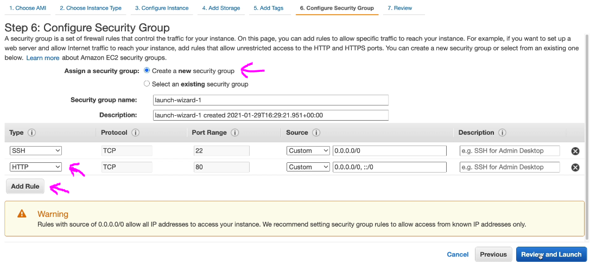

From the search search for EC2
Find Launch instance button in the Dashboard or from the menu on the left click Instances and again click Instances
From the Quick Start we will select with Linux 2 AMI 64-bit and click Select button
Select the instance type and click Next: Configure Instance Details
Select 1 instance and leave rest as default and scroll down
Defaults here as well
Copy the below commands in the optional textarea. These are commands which will run everytime we start our instance. After copy pasted the commands in the textarea click Next: Add Storage
yum update -y
yum install -y httpd
systemctl start httpd
systemctl enable httpd
echo "Hello World from $(hostname -f)" >
/var/www/html/index.html
Click Next: Add Tags
Click Add Tag button if you want to add tags. Tags are key:value pairs. After added all the tags you want click Next: Configure Security Group
Here by default we only have the SSH row for our new security group. Click the Add Rule button and add HTTP type so we can access our instance from anywhere. Click Review and Launch
